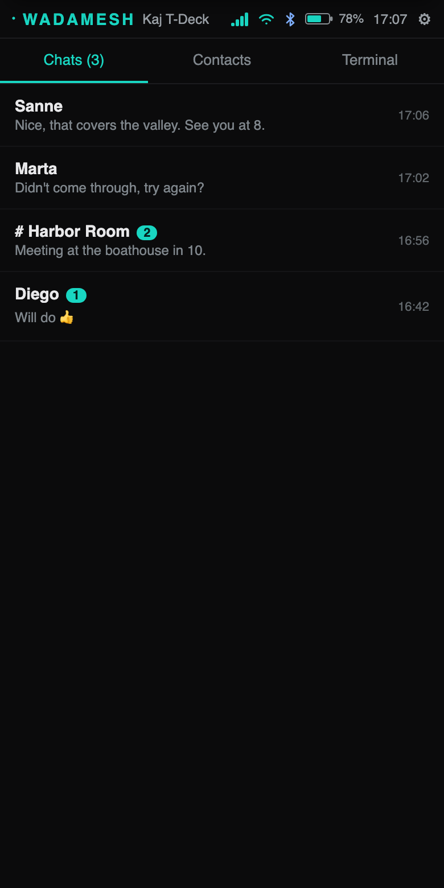
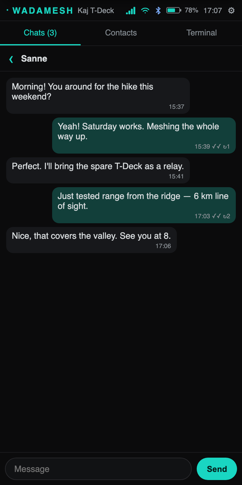
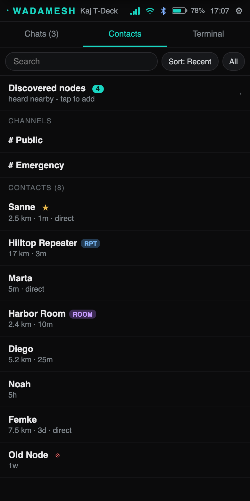
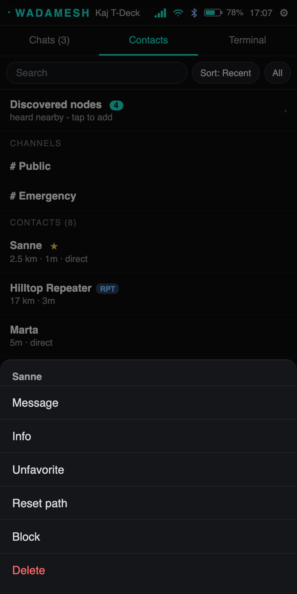
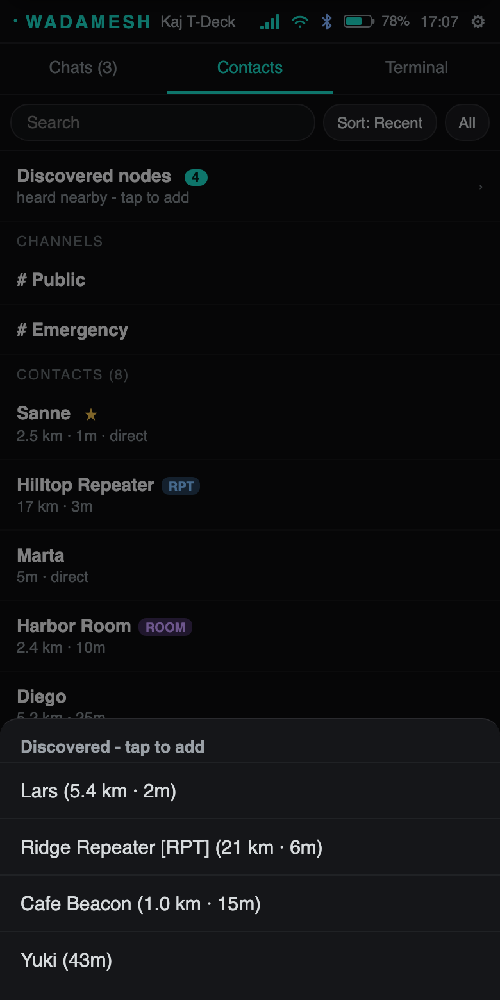
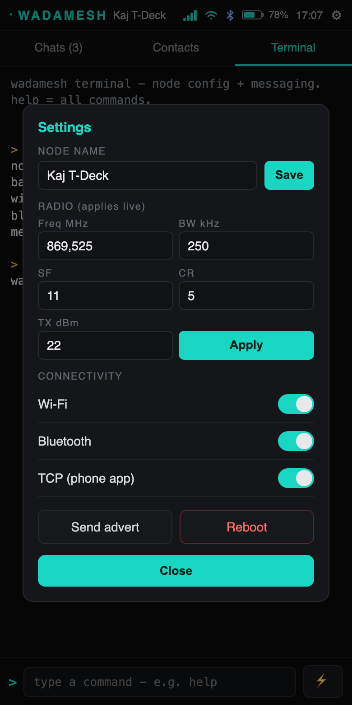
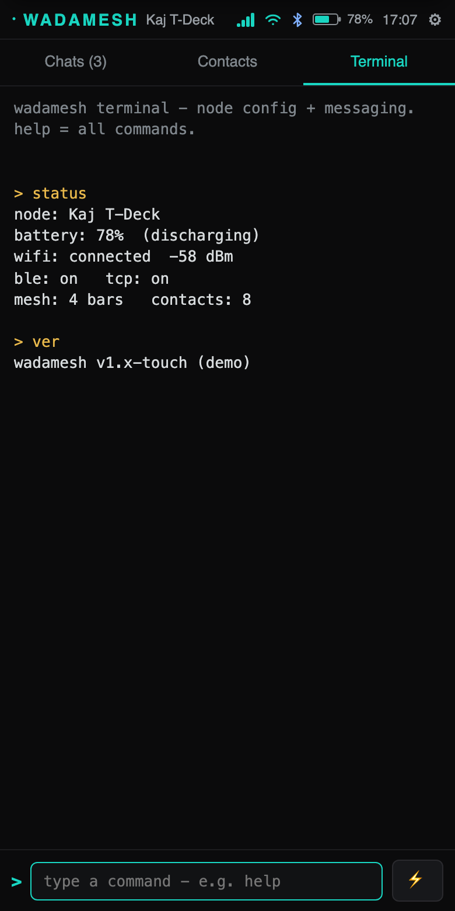
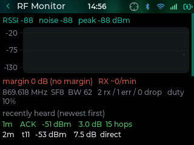

WADAMESH user guide
WADAMESH turns a LilyGo T-Deck, with its landscape screen, BlackBerry-style keyboard and trackball, into a complete front-end for your MeshCore radio: chats, channels, contacts, a live map and deep radio settings, all on the device. The same firmware runs on the Heltec V4 and V4-R8, the ThinkNode M9, the T-LoRa Pager, the T-Deck Pro and Max, the RAK WisMesh Tap V2, the Wio Tracker L2, the Attaky Mesh Deck, the CrowPanel Advance 3.5, the T-Display P4 and the Tanmatsu. Every screen below is a real screenshot from a T-Deck.
Every screen was redesigned in beta_89, a test build, and several features moved; beta_90 brought the colour back, with a choice of looks (Colours & theme). The stable build (beta_85) keeps the previous look until the redesign has been tested and promoted. Updates & test builds explains how to switch.
On devices with a microSD slot, wadamesh is best used with a card in place. It keeps map tiles, your contacts and your chat history on the card, which is roomier and far more reliable than the small internal flash, so a card prevents memory issues and stops that data being lost on reboot. Boards without a slot, like the Heltec V4, manage fine on their internal storage.
Home
The Home tab, the house in the middle of the bottom bar, shows your widgets, or the App drawer if you prefer that as your Home.
Widgets
A grid of small cards you arrange yourself: the time with today's sunrise and sunset, unread messages, the nodes heard this hour, the radio and its noise floor, the last signal, GPS, the battery, the links (Wi-Fi, Bluetooth, the phone app), and shortcuts such as Advert, any app from the drawer, or four switches. Most come in a small, a medium and some in a large size. Tap a widget to open what it shows: the clock opens the clock settings, the battery its 24-hour history, the radio Radio & Mesh, a chat that chat. Shortcuts act at once. While a clock widget is on Home, the clock in the status bar steps aside so the time is not shown twice.
More to add: one chat pinned to Home, mentions, the strongest node you hear directly, the readings of a sensor node on the mesh (asked for every 30 minutes, or as often as you set), the sun and the moon, airtime against your duty cycle, your position (hidden until you tap it), a note, and on the bigger boards a small live mesh radar and widgets that apps from the Store keep up to date.
Arranging
Hold any widget, or an empty part of Home, to arrange. Drag a widget to another place (the others step aside), tap the minus to remove it, tap an empty cell to add one, and tap a widget for its sizes and what it shows. Done saves. With keys, open Settings → Display → Home → Arrange Home: Enter on a widget gives the same choices, and Move shows where it can go. Boards that turn keep a layout for each way up.
Settings → Display → Home also starts you over from a preset: Glance (the default), Commander (the old status page, rebuilt from widgets), Radio, Minimal (a big clock) and, with the V4 Expansion Kit, Sensors.
App drawer
A tile for everything on the device, in rows by kind: talking to people (Chats, Contacts, Mentions, Map), the radio tools in amber (Advertise, Signal, Discover, Spectrum), and the system (Terminal, Remote, VNC, Settings, then Files, Store, Home and Power further down). Unread messages show as a count on the Chats tile, and apps you install from the Store get a tile here too. Tap the Home button again, or the Home tile, to go back to your widgets.
Choosing between them
Hold the Home tab for the launcher settings: whether the Home button opens your widgets or the App drawer, and whether the app icons are compact or large. The same sheet is under Settings → Display → Launcher layout.
The status bar
Unread messages on the left, the clock in the middle, signal and battery on the right, with Wi-Fi and Bluetooth small and grey beside them. On the Home tab your node name scrolls along the left. Tap the bar to open the control panel; inside a chat or on a settings page the bar carries a back chevron instead, and a tap goes back.
Building it yourself Dev
Firmware for the ESP32-S3 boards builds with PlatformIO from the repo. The Tanmatsu is different: it runs under badge.team's launcher as an app rather than as standalone firmware, and flashing it the usual way replaces the launcher OS. There is a separate guide for that: Sideloading on the Tanmatsu.
If you only want to write software for the device, you do not need a firmware build at all: see the Lua app SDK.
Is my history actually saving?
Settings → Device → Chat store is the answer: it names the storage in use, when history last saved successfully, and the exact stage and error a failing save is hitting. Worth a look if messages seem to vanish across a reboot.


Chats
Every conversation in one list, newest first: channels (group chats like #wadamesh or Public) and direct messages. Each row has an avatar drawn from the chat's key, a square for a channel and a circle for a person, with its last message, the time, and a count while something in it is unread, in the chat's own colour. Prefer the older look? Pick Initials on the Theme page and every avatar becomes the first two letters of the name in a coloured ball.
Along the top
- All, Channels and Direct filter the list.
- + adds a channel.
- ··· has Add a channel, Mark all as read, and Share my contact (a QR code someone else scans to add you).
On each row
- Tap to open the conversation.
- Hold for everything else about that chat: mark as read, region & scope, mute messages, mute mentions, share the channel's secret, blocked users, a chat icon (any emoji you like), delete history, and remove the channel or delete the chat. A room adds Log in again; a direct chat adds Reset path.
Muting messages silences a channel's chatter while an @-mention of you still gets through; mute mentions too and the channel is quiet altogether.

The header shows the chat's avatar and name, and under it how the last message reached you: Direct, no repeaters, a number of hops, or for a channel how many different nodes it heard from today. The chevron on the left goes back.
Other people's messages sit on the left with the sender's name in their own colour; yours sit on the right. Turn on Colourful bubbles on the Theme page and the bubbles take a dark tint of each sender's colour too, yours included. Under each message is how many hops it came over (the dots count them) and the time. Under your own channel posts it reads Heard by N repeaters, counting the repeats of your message as they come back, so you can watch it spread.
A direct message shows Sent, then Delivered once the other side confirms it. One that never arrived says Not delivered, tap to resend. A NEW line marks where your unread messages start.
Along the bottom: quick replies, emoji, the message field and the send button. Type on the keyboard to reply; hold a message for its menu.


Contacts
Everyone your node knows: name, type, how recently you heard them, and how far away they are when both of you have a position. Tap a contact to message it or open its details: signal history, a route trace, telemetry, and share and favourite options.
Along the top: a filter (everything, or one type of node), the Discovered list behind the radar icon (nodes heard but not yet added), search, sort, and a menu with Add contact, Select to delete, Auto-add settings and Blocked users.
The Discovered list is passive, built from what the device overhears; to go looking for nodes actively, see Discover. Auto-add can pull new nodes in from their adverts, or you can add them by hand.

Map
An OpenStreetMap or OpenTopoMap view with your position and your contacts plotted as markers, plus link lines from you to each node. Tiles are fetched over Wi-Fi through the wadamesh proxy and cached to flash (or microSD), so areas you have viewed work offline. Coloured dots along a route you have walked or driven come from wardriving.
It also has a line-of-sight analyzer: pick a contact and it uses SRTM elevation to show whether terrain blocks the path.

Bring your own tiles (offline maps)
You do not need Wi-Fi to see the map. Copy a standard OpenStreetMap tile pack onto the microSD card and the map reads straight off the card, fully offline.
Where they go. Use the usual slippy-map z/x/y folder layout, in either of these locations on the card:
/maps/osm/<z>/<x>/<y>.png: the Meshtastic and MeshCore standard layout (recommended, so packs are interchangeable between apps)./tiles/<z>/<x>/<y>.png: also read. This is the same folder the Wi-Fi download cache uses, so your own tiles and downloaded ones live side by side.
Format. 256×256 .png tiles (.jpg also works). z is the zoom level and x/y the tile column and row at that zoom, the same scheme OSM's own tile server and every XYZ tile downloader use, so most ready-made packs drop in unchanged.
Turn it on. Open the map's options (the gear button on the map) and switch on Tiles from SD card; the status line confirms Map tiles: microSD. Turn it back off to fetch live tiles over Wi-Fi again.
Making a pack. Any XYZ or slippy-map tile downloader works: point it at OpenStreetMap for your area and a sensible zoom range, then copy the resulting z/x/y folders onto the card. Each extra zoom level roughly quadruples the tile count, so grab only the levels you will actually use.
The Heltec V4 has no microSD slot, so it caches downloaded tiles to a small internal partition and cannot use offline packs. On the Tanmatsu, tiles (your own or downloaded) live at /tiles/<z>/<x>/<y>.jpg on the microSD card; drop JPEG tiles there and they show alongside the downloaded ones.
Settings
Settings opens with Device, which names the hardware beside it (on the T-Deck, the keyboard it detected too), then a list in four groups. Each page has its icon and, where it fits, its current state beside the name: your node name, the frequency, the network, the language, the charge.
- Mesh: Profile, Radio & Mesh, Auto-add, Quick replies.
- Connections: Wi-Fi, Bluetooth, GPS, MQTT bridge.
- Device: Display, Lock screen, Sound, Keyboard, Language, Clock & time, Battery, and Sensors on boards that have them.
- System: General, Backups, App permissions.
Tap a row to open its page; the bar at the top then carries a back chevron. Every page is described in Settings pages below. Hold the Settings tab to go straight to the control panel instead.

Lock screen & PIN
The lock screen keeps the device from reacting to a pocket or a stray tap. It shows the wadamesh mark, a large clock and the date, a line of the mesh activity over the last 24 hours with how many packets were heard, up to two unread conversations, and along the bottom how to unlock and the battery. A wallpaper you chose shows dimmed behind it. The whole view moves a few pixels every minute so nothing burns into the screen.
How you unlock depends on the board, and the bottom line says it: on the T-Deck you hold the trackball.
Settings → Lock screen has the wallpaper and the clock colour, Lock when screen off, Message text on lock screen (turn it off and the unread cards show who wrote, not what), and the PIN.
PIN lock
Turn on PIN lock and the device asks for a 4 character PIN to unlock: numbers, letters or a mix, and letters are not case sensitive. It locks at boot and every time the screen goes off.
Before you choose one, it shows a warning that you have to accept: a forgotten PIN cannot be recovered. The only way back in is to reset the device, which erases everything on it: contacts, channels, messages and settings. Nobody can unlock it for you.
- On a board with a keyboard you just type it. Touch-only boards show a pad. Boards without a touchscreen (ThinkNode M9, T-LoRa Pager, Tanmatsu) show a number pad you move through with the arrows, the d-pad or the wheel, and typing still works there.
- The keyboard backlight comes on while you enter it.
- Wrong tries slow down: every fifth miss makes you wait, 30 seconds at first and doubling up to 4 minutes, and the count survives a reboot.
- Change PIN asks for the current one first, and so does turning PIN lock off.
The Heltec V4, Heltec V4-R8, Attaky and CrowPanel have no lock screen, so no PIN either.


Screensaver
Instead of going dark, the screen can show the mesh around you. Constellation puts your node in the middle and the nodes you have heard around it; when positions are known they sit at their real bearing and an N marks north. A ring appears wherever a packet actually came from, light runs along the routes of nodes heard in the last ten minutes, your own node lights up when you transmit, and nodes you have not heard from in a while fade. Every movement on it is something that happened on the radio.
The clock, the date, unread messages and the battery move to another corner every two minutes, so nothing stays on the same pixels.
Turn it on in Settings → Display → Screensaver; Preview screensaver shows it straight away. Two settings decide how long it stays:
- On battery, show it for: how long it stays up after the screen timeout before the screen goes dark, from off to a minute (15 seconds unless you change it).
- Always on when connected to power: plugged in, it stays up for as long as the power does.
Any key or touch brings the device back. The screensaver does not run while the device is locked; the lock screen takes over then. The T-Deck Pro and Max, with their e-paper screens, have none.

New messages
When a message arrives while the screen is dark, the device lights up just long enough to show it: a card with the chat's avatar, its name and who wrote, how many hops it came over, the time, how many have arrived, and the message itself. Five seconds later the screen goes dark again. It does not open the chat, so the message stays unread, and whatever you had open is left as it was.
- On a dark screen the time sits above the card in large type, so it reads from across a desk.
- Over the lock screen the card sits under the lock screen's own clock.
- Over the screensaver it takes the side of the screen the clock is not on.
- More messages in quick succession update the card, and a count shows how many came in.
Settings → Display → At a glance turns it on or off; it is on unless you change it. At a glance while locked lets it show on a locked device too. That one is off unless you turn it on, because it makes your messages readable to whoever is holding the device. Do Not Disturb and muted channels keep it quiet.


Control panel
The quick switches, over whatever you are doing: Wi-Fi, Bluetooth, GPS, the day or night theme, the keyboard backlight (off, on or automatic), Lock, sound, Do Not Disturb, and a screenshot button with an optional timer, plus screen brightness, and volume on the boards with a speaker. Which switches appear depends on what the board has.
Open it by tapping the status bar, or by holding the Settings tab. Tap the bar again, or anywhere outside the panel, to close it. Hold a switch to jump to its settings page.

Text size & trackball
Text size
Where the board has room for the bigger fonts, Settings → Display → UI size makes the text larger. On the T-Deck, ThinkNode M9 and Heltec V4-R8 the choices are Normal, Large text and Huge text; the T-LoRa Pager and the large-screen boards have their own steps. It applies after a restart, and every screen is laid out for the bigger sizes rather than simply scaled up. The Heltec V4 has no room for the extra fonts.
The T-Deck trackball
The trackball works in one of two ways. In Scroll, the default, rolling it moves the screen: lists, pages and conversations. In Cursor it moves a pointer that clicks what it is over. Hold the trackball still for about half a second to switch between them; a card in the middle of the screen shows which one you are in. Settings → Keyboard → Trackball sets it too, and also offers Navigate (experimental), which moves a highlight from item to item.


Colours & theme
The look of the whole interface lives on one page: Settings → Theme, under Device. Holding the theme chip in the control panel opens it too.
It opens on a preview: a corner of the launcher, a chat and the send button, drawn in whatever you have picked, so you see the result before anything restarts. Under it:
- Mode: Night and Day as two small screens, with High contrast under them.
- Accent colour: the swatches on the page, and Custom for any other colour.
- Colour: MORE COLORS! with its style right under it, and Taste the rainbow.
- Chats: the chat icons, colourful bubbles and compact messages.
The mode, the accent and the colours are used by everything on screen as it is built, so they wait for one Apply and restart button, which appears on the preview once something differs from what you have now. Scroll past the preview and the button stays in reach in a slim bar under the title, beside six dots in the colours you picked; tap the dots to go back up to the preview. The chat looks apply at once.


One switch that turns the calm redesign up, in the style you pick. The layout stays the same in all three; what changes is how colour is used. It is on by default, in Regular. Turn it off for the calm look.
- Regular gives every section its own colour (the launcher, the Settings list, the tab bar), shows the status icons in colour (signal by strength, battery by level, Wi-Fi and Bluetooth tinted) and draws every name and glyph in its own hue.
- Neon is full cyberpunk: a near-black violet ground, electric cyan, hot magenta, laser yellow and acid lime, with lit edges on tiles, buttons and bubbles. Your accent stays yours, pushed to full brightness.
- Pastel is soft: mint, baby blue, lavender, peach and rose on a warm dark ground.
Taste the rainbow goes one further: every app, Settings page and tab gets its own place on the colour wheel, in the style you picked, and a few things move. The tab marker, the chats count and the keyboard focus ring slowly travel round the wheel, buttons dip when you press them, a new message lands with a flash of its sender's colour, and the lock screen mark, the boot mark and the screensaver's nodes light up in colour. The motion rests while the screen is off, locked or showing the screensaver.
High contrast keeps its own fixed colours, so the colour switches are greyed out while it is on. The e-paper T-Deck Pro and Max show only the chat looks.


Chat icons are Glyphs, a mark of dots drawn from the chat's key, or Initials: the first two letters of the name (a leading # skipped) in a ball coloured from the name. The choice reaches every icon at once: the chat list, contacts, the conversation header, the lock screen cards and the new-message card. A chat icon you picked yourself (an emoji) still wins.
Every sender's name is in its own colour, and a person's name, glyph and ball always share it. Colourful bubbles tints the bubbles with it too, your own included; mentions of you keep their blue bubble. In Day mode, names and glyphs on the light lists use a deeper shade of their colour so they read on white.

Discover & wardriving
Discover is an app in the home launcher. It does something the rest of the firmware never does: instead of waiting to overhear other nodes, it asks. It broadcasts a request that neighbouring repeaters answer directly, so anything that replies is provably reachable from exactly where you are standing.
Two similar names, two different things. The Discovered list in Contacts is passive: nodes you happened to overhear, waiting to be added. The Discover app is active: it transmits a request and lists who answers. This section is about the app.
What you see
A live list of everything answering right now, strongest signal first. Each row shows the node's name (or Node ·A1B2 from its key if it is not a contact yet), its signal, how many hops away it is, and how long ago it replied. Tap a row to add that node as a contact.
The list is live rather than historical: a node that stops answering for more than about eight seconds drops off it. That is the point, because the question being answered is "what can I reach from here, now".
Wardriving: mapping your coverage
If the device has a GPS fix, Discover starts recording while it scans. There is nothing to switch on. Every time you move roughly 15 metres, or every 20 seconds if you stay put, it takes a sample: your position, plus every node answering at that moment.
Because a reply proves reachability from that spot, the trail of samples is a map of your own radio coverage. Open the Map tab and the samples are drawn as coloured dots along the route you walked or drove: green where the best signal was strong, red where it was weak.
The footer of the Discover app tells you what is happening: Wardrive: 42 coverage pts · 137 logged to SD, or waiting for GPS fix if there is no position yet.
How to do a wardrive
- Put a microSD card in, if your board takes one. Without it the map still works, but nothing survives a reboot.
- Wait for a GPS fix. The footer says so plainly when it is still waiting.
- Open Discover from the home launcher and leave it open.
- Go for a walk or a drive. Samples are taken automatically as you move.
- Open the Map tab to see the coverage dots along your route.
Discover keeps transmitting while it is open, so it uses more power and more airtime than sitting idle. It is a tool to use deliberately for a while, not something to leave running all day.
The log file
Every sighting is appended to /meshcomod/discover/wardrive.csv on the card, one row per node per sample:
epoch,lat,lon,type,pubkey,rssi,snr,hopsThat is a plain CSV, so it opens in any spreadsheet or mapping tool. It is the only part of a wardrive that survives a reboot: the coloured dots on the map are held in memory and the newest 160 samples are kept, so a long drive keeps the most recent stretch rather than the whole thing.
There is no on-device viewer for the log. You can see the file in the Files app, but reading the sightings back means taking the card to a computer.
Companion mode
WADAMESH runs everything on its own, but it can also be the radio for the official MeshCore app on your phone (iOS and Android). Your phone brings the big screen and full keyboard; the device does the LoRa. Best of all it works alongside the on-device interface: you can keep using the device while your phone is connected, and your contacts, channels and messages stay in sync between them.
Three ways to connect
- USB: plug the device into an Android phone or a computer; the app connects over the cable. Nothing to set up on the device.
- Bluetooth: turn on Bluetooth in Settings → Bluetooth. The device appears in the app under your node name; pair with the 6-digit code (default
123456, changeable on the same page). - Wi-Fi: put the device on your network in Settings → Wi-Fi. On the same Wi-Fi, the app connects to the device's IP address on port
5000(the Wi-Fi page shows the IP).
Bluetooth and Wi-Fi can be on at the same time, but each one reserves a good chunk of memory. On the Heltec V4 especially, which has the least free memory of all the boards, keeping both on at once leaves little headroom and can lead to instability or odd behaviour. If you only want the phone app, pick one transport (Bluetooth or Wi-Fi) and leave the other off; if you mostly use the device on its own, keep both off.

Remote & web app
Over Wi-Fi, a WADAMESH device can put its screen, or a whole browser app, on your phone or laptop. There is nothing to install: the device serves a web page you open in any browser on the same network. Turn it on from Home → Remote, pick a mode, and open the address it shows.
Three ways to connect
- Remote app (recommended): a full control panel, native to the browser, with Chats, Contacts, a Terminal and Settings, and live message notifications. Run the device entirely from your phone.
- Screen mirror (VNC): streams the device's live screen to the browser and sends your taps and key presses back, so you see and drive exactly what is on the device, in real time.
- Remote UI: renders the interface off-screen at desktop size (a wide landscape layout) and streams that instead of the small panel, for a roomier view on a big screen.
Screen mirror and Remote UI both show the interface you already know from the device, mirrored or drawn larger. The Remote app is different: a browser-native panel built for a phone, shown below.
Turning it on
Connect the device to Wi-Fi first, then open Home → Remote. The screen shows the address to type into your browser (like http://192.168.1.42) and a switch for each mode. Only one streaming mode runs at a time, and the phone and the device must be on the same Wi-Fi network.

The remote app is phone-first. It carries the same status icons as the device (signal, Wi-Fi, Bluetooth, battery), pops up a notification when a message arrives, and refreshes an open chat on its own as replies come in, so you rarely need to touch the device itself.







Web browser
WADAMESH can read the web on its own screen. Open the Web app from the home launcher, type an address, and the device fetches the page and shows it as plain, readable text: articles, wikis, docs, simple sites. There is no proxy in the middle and nothing is tracked: it pulls the page straight from the site and strips it down to the words.
- Text only: no JavaScript, no images, no ads. Pages load small and read clean.
- Tappable links: follow a link to the next page, with back, forward and refresh in the toolbar.
- Direct and private: the device connects to the site itself over Wi-Fi (HTTPS); no server of ours sees what you read.
Reading the web on the device takes more memory than the smallest board carries. The Web app is on every board except the Heltec V4, whose 2 MB cannot complete the secure handshake; you can still bounce any link to your phone (below).

A link that arrives in a message is tappable. Tap it for a small menu: Open in web loads the page in the on-device browser, and Create QR puts a scannable QR code on screen so you can open the link on your phone. Create QR works on every board, including the Heltec V4, so even where the browser is not available, a link is one tap from your phone.


Updates & test builds
WADAMESH checks for new firmware on its own. When one is available, Settings → Device shows it and you can flash it straight from the device with Install update, over Wi-Fi, with no computer needed. (A T-Deck running under Launcher updates through Launcher instead, and the Tanmatsu through its app store.)
Two channels: Stable and Test
- Stable is the default. It is the build that has been tested and is recommended for everyday use. Leave your device on this unless you want to help test.
- Test (beta) gets new features and fixes earlier, before they are proven. It can be rough, so it is meant for trying things early and reporting bugs, not for a device you rely on.
Turn on test builds
Flip Settings → Device → "Get test builds (beta)" on. From then on, both the update check and Install update follow the test channel, so the device offers the newest test build over Wi-Fi. Turn the switch back off to return to stable. You can switch either way at any time.
Prefer to start on a test build from scratch? Pick Beta · testing when you flash from flasher.wadamesh.com.

Settings pages
What each settings page does and the controls you will find on it, in the same four groups as the Settings tab. Some pages exist only on the boards that need them. Open any page from the Settings tab; the back chevron in the bar returns you to the list.

Profile
- Node name: your callsign on the network
- Advert location plus a share-in-advert switch
- Identity key and Share QR to hand out your contact

Radio & Mesh
- Radio: preset, frequency, bandwidth, spreading factor, coding rate, TX power, with a live duty-cycle and airtime-per-packet readout
- Mesh: answer telemetry, path-hash size, region scope, scope direct messages
- Signal: high-gain receiver (Heltec V4.3), signal probe, and a shortcut to the Advertise app
- Experimental: multi-ACKs, client repeat, RX boost, duty meter

Auto-add
- Per-type switches: chat, repeater, room, sensor
- Overwrite oldest when the contact list is full
- Notify when a new contact is added
- Max hops filter for how far away a node can be

Quick replies
- Edit six short replies
- Pick them from the composer to send instantly

Wi-Fi
- On or off, with a live status line (IP, signal)
- Scan and tap a network, or type one in by hand
- Save & reconnect applies live, without a reboot
- Saved network slots for one-tap quick connect
Bluetooth
- Enable Bluetooth with a live mode status line
- Set a 6-digit pairing code (applies after a reboot)
- Use a Bluetooth keyboard instead of the phone app, with its layout

GPS
- On or off with a live fix status (acquiring, 2D or 3D, age)
- Serial baud rate (applies after a reboot)
- Reads "no GPS module" on devices without one

MQTT bridge experimental
- Publishes the text, sender and time of messages your node hears to an MQTT broker
- Broker host, port and topic, plus an encryption key
- Stays off until you accept the privacy note: anyone who can read the broker sees the messages, so use one you control, never a public broker

Display
- Screen timeout before the screen sleeps
- Screensaver, how long it shows on battery, and always on when connected to power, with a preview (Screensaver)
- Launcher layout, UI size and Condense Nav (a navigation rail in landscape)
- At a glance and at a glance while locked (New messages)
- Hide device name and distance in miles
Theme beta_90
- A preview of what you pick, with Apply and restart
- Night or Day, high contrast, and the accent colour
- MORE COLORS! in Regular, Neon or Pastel, and Taste the rainbow
- Chat icons (glyphs or initials), colourful bubbles and compact messages

Lock screen
- Wallpaper and lock text colour
- Lock when screen off
- PIN lock and Change PIN
- Message text on lock screen

Sound
- Master sound plus separate switches for messages, direct messages and @mentions
- Custom sound files from microSD where supported
- Volume on the boards with a speaker

Keyboard
- Secondary layouts: Cyrillic, Greek, Arabic, French, German and more
- Arabic on a built-in keyboard: the letters follow the Arabic 101 layout. The seven that sit on punctuation keys there are on the digits: ج د ذ ز ط ظ و on 1 to 7 and ك on 8 (Alt+Q to Alt+I on the T-LoRa Pager). Shift gives أ (H), إ (Y), آ (N), لأ لإ لآ (G, T, B), ، (K), ؛ (P), the tashkeel (Q W E R A S X, shadda on Z) and ؟ on the question mark
- Accent popups: long-press for accented letters
- Enter sends the message, and a flash of the screen and keys on a new message
- Keyboard navigation, and on the T-Deck the Trackball mode: Scroll, Cursor or Navigate

Language
- Tap a language; the device restarts to apply it

Clock & time
- Sync clock from the network
- Time zone picker, or a custom UTC offset
- 12-hour clock switch

Battery
- Battery and power history chart
- Calibrate: tap to set 100% at the current voltage
- Battery saver slows the processor down while the device is idle

General
- Send advert now
- Store data on SD (restart)
- Run setup again from scratch
- Reboot device

Backups
- Export a new backup file
- Restore from the saved list
- Factory reset in the danger zone

App permissions
- Per app: reading and sending on channels, and reading and sending private messages
- An app asks the first time it needs a permission; change your answer here
Device
- Model, radio (e.g. SX1262 or LR1121) and the hardware detected at boot; the Device row names it too
- Older keyboard protocol (T-Deck): turn on if the keyboard types the wrong letters
- Firmware version plus update check / install
- Get test builds (beta) switch: opt into the test channel
- Send a test report and Report a bug: see Testing a beta
- Full system information: uptime, chip, memory, flash, storage
- Device ID and crash-report export
Apps
Tools from the home launcher. Spectrum sweeps the band so you can spot interference or find a clear frequency, Signal shows the live receive signal, and Advertise announces you to the mesh, by hand or on a timer. RF Monitor is a repeater-style view of recent packets and radio stats, from the Store.
Writing your own
The Apps drawer is open. Snake, RF Monitor and Airtime are ordinary Lua apps downloaded from the Store over Wi-Fi, and anyone can submit one. They are not built into the firmware and they get no privileges yours would not have.
An app is a single Lua file plus a one-line manifest, talking to the firmware through the wada.* API. Submit it as a pull request to the repository, or open an issue with the file attached if you would rather not use git. The full procedure (file layout, versioning, and what the review looks for) is in deploy/apps/README.md.
Every submission is reviewed and safety-checked before it is added. An app runs on other people's radios, so each one is read for anything touching the node identity, keys or channel secrets, for flash-write patterns that can stall the device, and for anything that would block the interface or the mesh. If something needs changing we say what and why, and we would rather help you land it than turn it away.


Testing a beta
A test build becomes the stable release when it has been shown to work, and with this many board images most of them are in hands we never hear from. So the device can report: Settings → Device → "Send a test report". What you send appears on the test matrix, which is what the next promotion is decided on.
What a report says
Tick only the areas you actually exercised, say how long you have been running the build, and add a line if you have something to say. The areas matter: "it works" from somebody who watched it boot and "it works" from somebody who messaged on it all week are not the same claim, and a board only turns green on two reports of the second kind from two different devices.
The report carries the board, the version, your ticks, the free memory and whether you store data on SD. It carries no name, no contacts and no position, and the device lists exactly what it will send before it sends it. It needs Wi-Fi.
Your device is identified by a salted hash of its public key, truncated, so a second report replaces your first rather than counting twice, and nobody reading the matrix can work back to a node.
Counting devices
A board with no reports might be a board nobody tested or a board nobody owns, and those need opposite responses. The optional Count this device switch, on the same page, lets the update check say which board and version it is running so the matrix has a denominator. It is off until you turn it on and sends nothing else.
Reporting a bug
Report a bug draws a QR code. Scan it with your phone and it opens a GitHub issue form with your board, firmware version and diagnostics already filled in, so you only type what went wrong. The issue is filed under your own GitHub account, which means you get the replies.
If the device saved a crash report, attach it: a crash report usually turns a guess into a line number. You can get it off the device with USB Files or the browser transfer page.
Translating WADAMESH
The interface ships in fourteen languages besides English, and every one of them was written by somebody who uses the device. Corrections and new languages are welcome. This section is the whole procedure, because getting it wrong is easy and the failure is quiet.
Edit one file, and only that file
The canonical source for a language is:
deploy/apps/lang/<code>.langfor example hu.lang, de.lang, nl.lang. It is a plain UTF-8 text file, one string per line, with the English original and your translation separated by a single TAB:
Contacts Névjegyek
No SD card Nincs SD-kártyaA short header at the top carries the language code, its name as it appears in the picker, and a version number.
New strings arrive in every file as placeholders, with the English on both sides of the tab. Replacing the right-hand side is all a translation needs; a line left as it is shows in English.
Do not edit src/ui-touch/i18n_builtin.h. It is a generated file and says so on its first line. It is rebuilt from the .lang files by a script, so anything typed into it directly is thrown away the next time anyone regenerates it, and it never reaches the language Store either, so devices that download their language would keep the old text while devices using the built-in copy showed the new. Two sources of truth, silently disagreeing. Put the work in the .lang file and it lands in both.
Rules that keep a language file safe
- The English side is a key, not a label. It has to match the firmware's string exactly, every character, including the ellipsis
…where the original uses one rather than three dots. A key that does not match is simply never used, and nothing warns you. - Placeholders must survive. If the English contains
%s,%dor%u, your line needs the same ones, the same number of times, in an order that still makes sense. The firmware checks this and ignores a line whose placeholders do not match, because a mismatch there can crash the device. - A newline is written
\n, two characters, exactly as in the English. A real line break would end the entry. - No tab characters inside a translation: the tab is the separator.
- Leave the technical strings alone. Units and protocol terms (
SF,CR,MHz,dBm,GPS,Wi-Fi,Bluetooth) and the product name are meant to stay as they are. - Watch the length. Buttons and list rows are sized for the English. A translation twice as long will be cut off on a small screen, so prefer the shorter phrasing where there is a choice.
How to send it
A pull request that changes only deploy/apps/lang/<code>.lang is the easiest thing to review and merge. If you would rather not use git, open an issue and attach the file, or paste the lines you have changed. That is just as welcome, and we will do the rest.
What happens on our side: the version number is bumped, the file is republished to the language Store so existing devices are offered the update, and the compiled-in table is regenerated so a fresh install has it too. You do not need to do any of that.
Starting a new language
Copy an existing file, change the header's code and name, and translate as much as you have patience for. Partial is fine. Any line you leave out falls back to English, so a half-finished language is genuinely useful on day one and can be filled in over time.
Finding what still needs doing
Strings are added and reworded as the firmware grows, so a language drifts. The placeholder lines (English on both sides) are exactly the ones still to do. If you would like the list another way, open an issue asking for the current gaps for your language and we will generate it.
One thing worth knowing when a translation you wrote seems to have disappeared: if the English wording itself was changed (say a setting was renamed to be more specific), the old key no longer matches anything, and the translation attached to it goes unused. It has not been deleted or rejected. It just needs re-pointing at the new English, which is a good moment to check the meaning still fits.